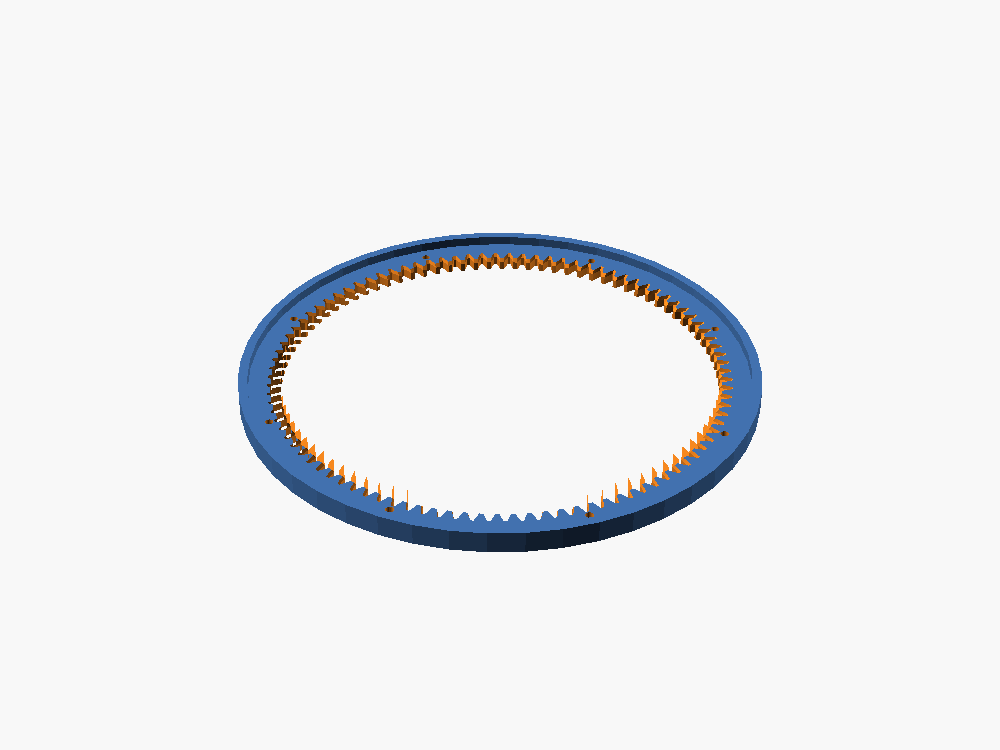
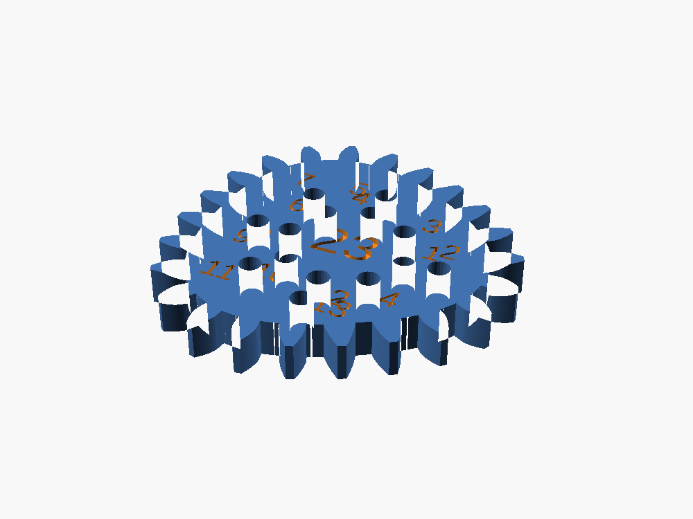
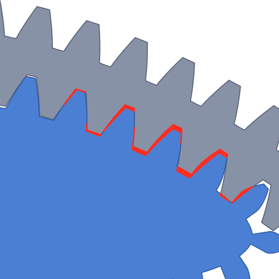
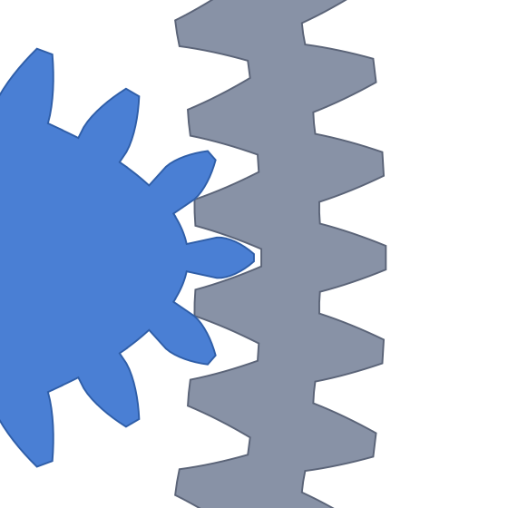
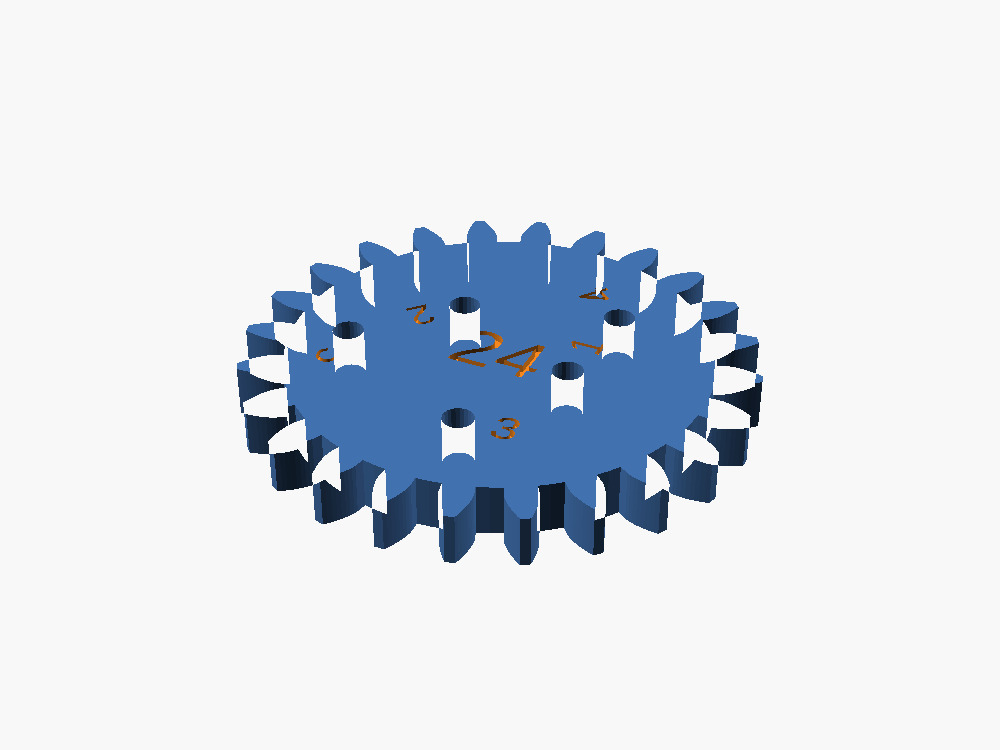

check
Parses the source and resolves every reference. It doesn't build geometry, so it answers in a fraction of a second.
$ check bad.scad ERROR: Parser error: syntax error in file bad.scad, line 1 Can't parse file 'bad.scad'!
echo
Reads values the model computed, still without building geometry. These are the dimensions the design derives, not numbers typed in.
$ echo spirograph.scad main ring outer diameter : 167.75 mm main ring bore diameter : 141 mm outer ring diameter : 160.5 mm tooth height : 3.375 mm
preview
Returns the render as an image, so the model can look at what it built instead of inferring it from numbers.


verify
Both wheels below are clean manifolds. Both fit the bed. Both slice without a complaint. One of them jams.
ellipse 30 × 10
Its pitch curve flattens, so the curve there is straighter than the ring it has to roll inside.

ellipse 28 × 12
Rounder, so its curvature stays inside the ring's everywhere on the circuit.

Measured by rolling each wheel a full circuit and intersecting the solids at every step. The ring's radius is 72.00 mm; the failing wheel reaches 88.85 mm.
measure
Bounding box and volume, straight off the mesh. This is the 24 tooth wheel, the smallest part in the set.

| triangles | 4 990 |
| size x | 38.993 mm |
| size y | 38.993 mm |
| size z | 4.000 mm |
| volume | 3 796.322 mm³ |
check_bed_fit
The slicer will emit G-code that runs off the bed without saying a word, so the part gets measured against the machine's printable area first.
| machine | Creality K1 |
| bed | 220 × 220 mm |
| height | 250 mm |
| part | 38.99 × 38.99 mm |
| result | fits |
Stock profiles write the bed two different ways, and most Bambu machines don't carry one at all. Of the 473 machine profiles installed here, 469 resolve.